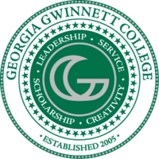
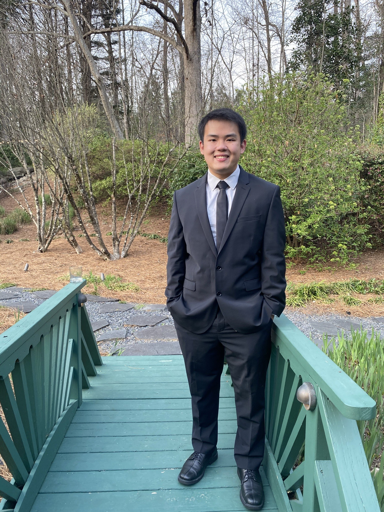

Hi, I'm Ravee!
I have a Bachelor's degree in Management Information Systems with a Minor in
Information Technology from Georgia Gwinnett College! I am looking for a postion where I can use my degree
to help a company grow.

